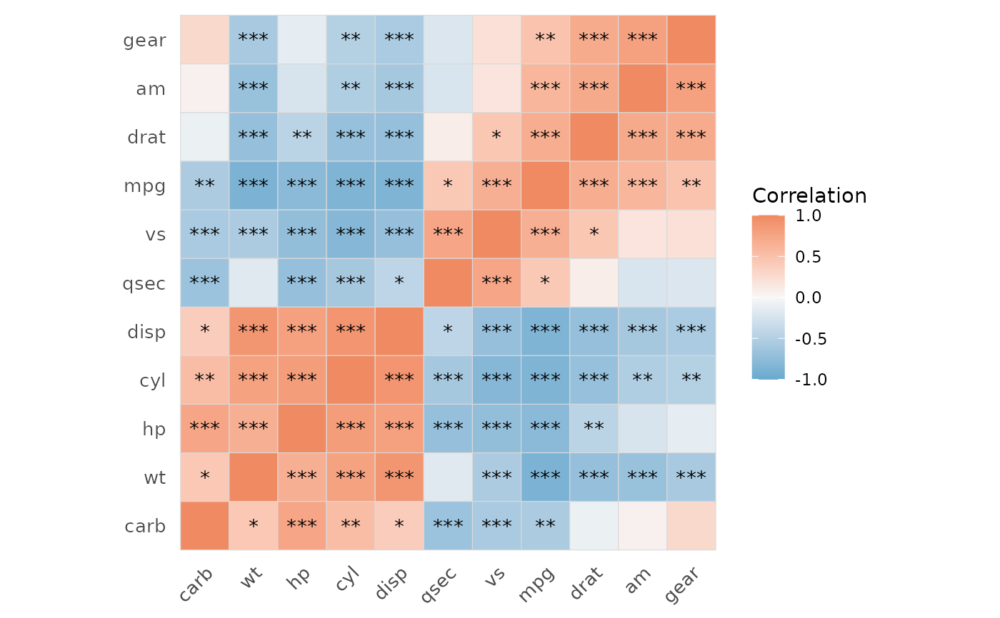

Computes pairwise correlations with p-values, optional multiple-testing correction, and a publication-ready heatmap. Supports Pearson, Spearman, and Kendall methods.
Usage
quick_cor(
data,
vars = NULL,
method = c("pearson", "spearman", "kendall"),
use = "pairwise.complete.obs",
p_adjust_method = c("none", "holm", "hochberg", "hommel", "bonferroni", "BH", "BY",
"fdr"),
alpha = 0.05
)
# S3 method for class 'quick_cor_result'
plot(
x,
y = NULL,
type = c("full", "upper", "lower"),
show_coef = FALSE,
show_sig = TRUE,
hc_order = TRUE,
hc_method = "complete",
palette = "gradient_rd_bu",
lab_size = 3,
title = NULL,
show_axis_x = TRUE,
show_axis_y = TRUE,
axis_x_angle = 45,
axis_y_angle = 0,
axis_text_size = 10,
sig_level = c(0.001, 0.01, 0.05),
...
)Arguments
- data
A data frame.
- vars
Character vector of column names to include.
NULL(default) uses all numeric columns.- method
One of
"pearson"(default),"spearman","kendall".- use
Character. Missing-value handling passed to
cor(). Default"pairwise.complete.obs".- p_adjust_method
P-value adjustment method passed to
p.adjust. Default"none".- alpha
Numeric. Significance threshold for identifying significant pairs. Default
0.05.- x
A
quick_cor_resultobject fromquick_cor().- y
Ignored.
- type
One of
"full"(default),"upper","lower".- show_coef
Logical. Show correlation coefficients? Default
FALSE.- show_sig
Logical. Show significance stars? Default
TRUE. Silently disabled whenshow_coef = TRUE.- hc_order
Logical. Reorder by hierarchical clustering? Default
TRUE.- hc_method
Clustering method. Default
"complete".- palette
evanverse palette name. Default
"gradient_rd_bu".NULLuses a built-in Blue-White-Red scale.- lab_size
Numeric. Label size when
show_coef = TRUE. Default3.- title
Character. Plot title. Default
NULL.- show_axis_x
Logical. Show x-axis labels? Default
TRUE.- show_axis_y
Logical. Show y-axis labels? Default
TRUE.- axis_x_angle
Numeric. X-axis label angle. Default
45.- axis_y_angle
Numeric. Y-axis label angle. Default
0.- axis_text_size
Numeric. Axis text size. Default
10.- sig_level
Numeric vector. P-value thresholds for ***, **, *. Default
c(0.001, 0.01, 0.05).- ...
Additional arguments passed to the internal plotting backend.
Value
An object of class "quick_cor_result" (invisibly) containing:
cor_matrixCorrelation coefficient matrix
p_matrixUnadjusted p-value matrix
p_adjustedAdjusted p-value matrix;
NULLwhenp_adjust_method = "none"method_usedCorrelation method used
significant_pairsData frame of significant pairs
descriptive_statsPer-variable summary data frame
paramsList of input parameters
dataCleaned data frame (for
plot()method)
Use print(result) for a one-line summary, summary(result)
for full details, and plot(result) for the correlation heatmap.
Details
P-value computation: Uses psych::corr.test() when available
(10-100× faster for large matrices); otherwise falls back to a
stats::cor.test() loop.
Examples
result <- quick_cor(mtcars)
#> ℹ Found 44 significant pairs out of 55 tests.
#> ! 1 pair with |r| > 0.9 (potential multicollinearity).
print(result)
#> pearson | 11 vars | 44/55 significant pairs (alpha = 0.05)
summary(result)
#>
#> ── Correlation Analysis ────────────────────────────────────────────────────────
#>
#> ── Parameters ──
#>
#> Method: pearson
#> Missing obs: pairwise.complete.obs
#> P-adjust: none
#> Variables: 11
#> alpha: 0.050
#>
#> ── Descriptive Statistics ──
#>
#> variable n mean sd median min max
#> mpg 32 20.090625 6.0269481 19.200 10.400 33.900
#> cyl 32 6.187500 1.7859216 6.000 4.000 8.000
#> disp 32 230.721875 123.9386938 196.300 71.100 472.000
#> hp 32 146.687500 68.5628685 123.000 52.000 335.000
#> drat 32 3.596563 0.5346787 3.695 2.760 4.930
#> wt 32 3.217250 0.9784574 3.325 1.513 5.424
#> qsec 32 17.848750 1.7869432 17.710 14.500 22.900
#> vs 32 0.437500 0.5040161 0.000 0.000 1.000
#> am 32 0.406250 0.4989909 0.000 0.000 1.000
#> gear 32 3.687500 0.7378041 4.000 3.000 5.000
#> carb 32 2.812500 1.6152000 2.000 1.000 8.000
#> ── Correlation Summary ──
#>
#> Min: -0.868
#> Max: 0.902
#> Mean |r|: 0.559
#>
#> ── Significant Pairs ──
#>
#> ℹ Based on unadjusted p-values.
#> 44 out of 55 pairs significant at alpha = 0.05
#>
#> var1 var2 correlation p_value
#> cyl disp 0.9020329 1.802838e-12
#> disp wt 0.8879799 1.222320e-11
#> mpg wt -0.8676594 1.293959e-10
#> mpg cyl -0.8521620 6.112687e-10
#> mpg disp -0.8475514 9.380327e-10
#> cyl hp 0.8324475 3.477861e-09
#> cyl vs -0.8108118 1.843018e-08
#> am gear 0.7940588 5.834043e-08
#> disp hp 0.7909486 7.142679e-08
#> cyl wt 0.7824958 1.217567e-07
#> mpg hp -0.7761684 1.787835e-07
#> hp carb 0.7498125 7.827810e-07
#> qsec vs 0.7445354 1.029669e-06
#> hp vs -0.7230967 2.940896e-06
#> drat am 0.7127111 4.726790e-06
#> drat wt -0.7124406 4.784260e-06
#> disp vs -0.7104159 5.235012e-06
#> disp drat -0.7102139 5.282022e-06
#> hp qsec -0.7082234 5.766253e-06
#> cyl drat -0.6999381 8.244636e-06
#> drat gear 0.6996101 8.360110e-06
#> wt am -0.6924953 1.125440e-05
#> mpg drat 0.6811719 1.776240e-05
#> mpg vs 0.6640389 3.415937e-05
#> hp wt 0.6587479 4.145827e-05
#> qsec carb -0.6562492 4.536949e-05
#> mpg am 0.5998324 2.850207e-04
#> cyl qsec -0.5912421 3.660533e-04
#> disp am -0.5912270 3.662114e-04
#> wt gear -0.5832870 4.586601e-04
#> vs carb -0.5696071 6.670496e-04
#> disp gear -0.5555692 9.635921e-04
#> wt vs -0.5549157 9.798492e-04
#> mpg carb -0.5509251 1.084446e-03
#> cyl carb 0.5269883 1.942340e-03
#> cyl am -0.5226070 2.151207e-03
#> cyl gear -0.4926866 4.173297e-03
#> mpg gear 0.4802848 5.400948e-03
#> hp drat -0.4487591 9.988772e-03
#> drat vs 0.4402785 1.167553e-02
#> disp qsec -0.4336979 1.314404e-02
#> wt carb 0.4276059 1.463861e-02
#> mpg qsec 0.4186840 1.708199e-02
#> disp carb 0.3949769 2.526789e-02
#>
plot(result)

result <- quick_cor(
mtcars,
vars = c("mpg", "hp", "wt", "qsec"),
method = "spearman",
p_adjust_method = "BH"
)
#> ℹ Found 5 significant pairs out of 6 tests.